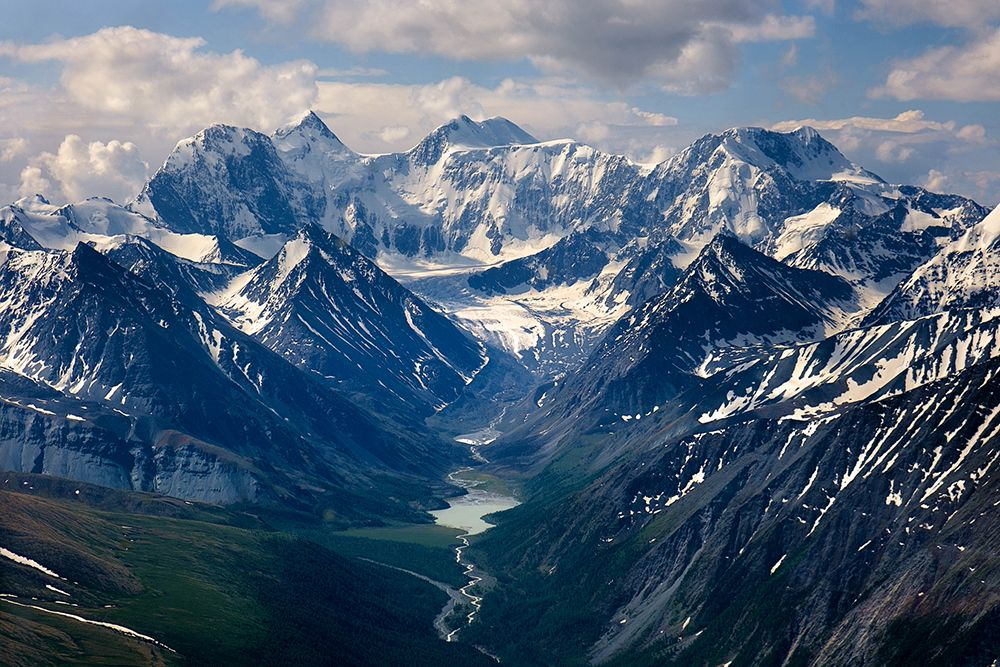
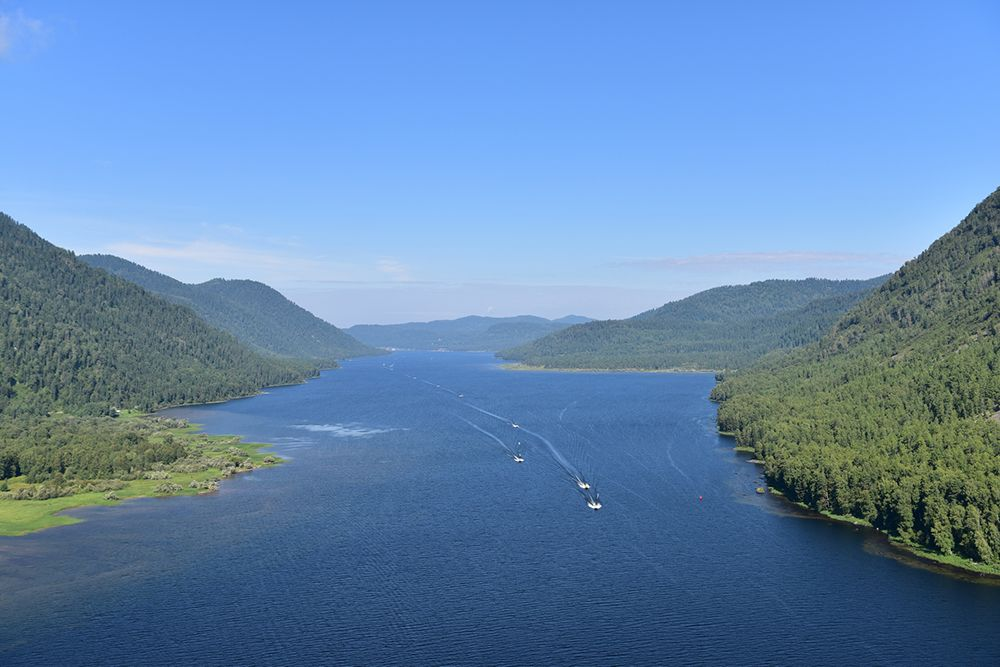
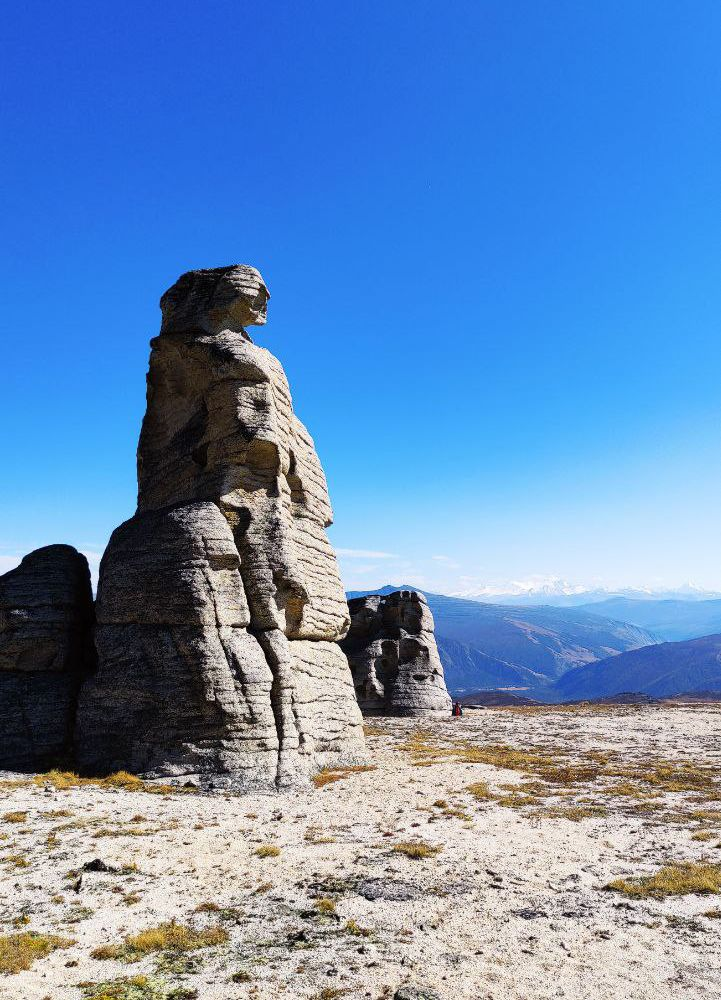
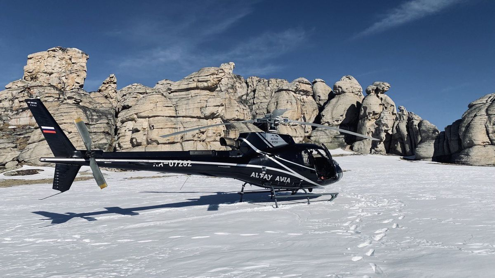
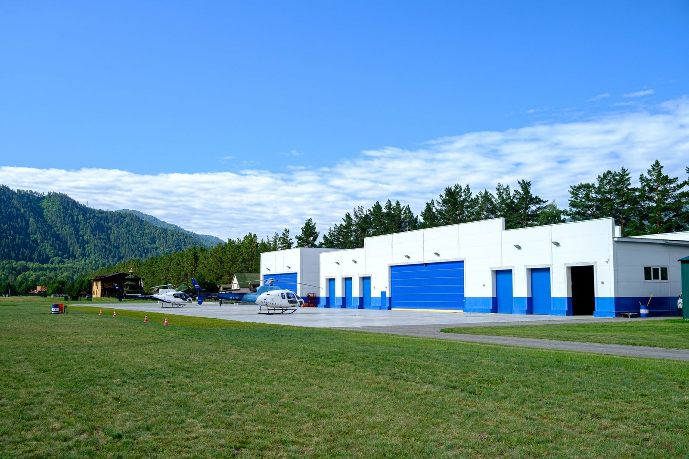
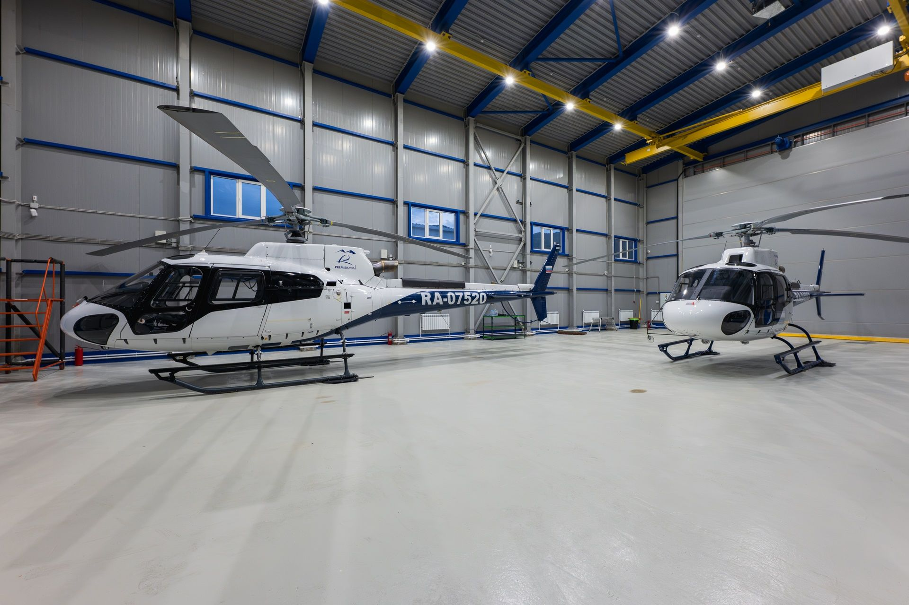

Посадочная площадка «Карасук» · 51°33′36″ N 85°55′03″ E
На Алтае сейчас --:--
Входим в группу компаний Premier Avia
Аренда вертолетов по городам Сибири
Уникальные экскурсионные маршруты
Сервисное обслуживание вертолетов
Услуги по ангарному хранению
Отправляя заявку, Вы даете согласие на обработку персональных данных в соответствии с Условиями
* Считается общее время аренды вертолёта, т.е. в обе стороны. Точную стоимость подтвердит менеджер.

Цены — за полёт на Eurocopter AS350, старт с площадки «Карасук». Считается общее время аренды.
Тридцать маршрутов по Горному Алтаю — от получасового облёта Катуни до ледников Белухи. Прокрутите ленту.

4506 м · посадка на озере Аккем

и долина реки Чулышман

каменные останцы урочища

и Кызыл-Чин — «Марс»

граница четырёх стран

каскад из семи озёр

центр альпинизма на Алтае
Компания «АлтайАвиа» осуществляет коммерческие воздушные перевозки. Мы — одна из самых крупных частных авиакомпаний в Сибири с выгодным расположением к соседним регионам и сетью посадочных площадок во многих популярных туристических объектах Алтая и Сибири.


Все борта показаны в одном масштабе: МИ-8АМТ и МИ-171 почти вдвое больше Eurocopter AS350. Вращайте сцену мышью или пальцем, включайте винты.
Лёгкий одномоторный вертолёт с панорамным остеклением — идеален для экскурсий, фото- и видеосъёмки, посадок на высокогорные площадки.
Средний двухдвигательный вертолёт с просторным салоном — для больших групп, чартерных перелётов и дальних маршрутов по Алтаю и Сибири.
Вертолёт бизнес-класса на базе Ми-8: VIP-салон на 9 пассажиров, повышенный комфорт и всепогодность для деловых и туристических перелётов.
Цена «от» — за полёт на Eurocopter AS350. Старт с посадочной площадки «Карасук».

Доставим Вас быстро и комфортно в любую точку региона
Подробнее
Проведем незабываемые экскурсии на высоте птичьего полета
Подробнее
Предлагаем услуги ангарного хранения
Подробнее
Проводим работы по всем видам технического обслуживания
Подробнее
Позвоните или оставьте заявку — подберём борт и маршрут, рассчитаем стоимость полёта.